Candidate List 20260809Last night — ZTF: 2,891 passed basic cuts (272 young) · LSST: 0 passed basic cuts (0 young)Previous Day Next Day
Section 1: New Sources (age<1d) Section 2: Old (1-5d) sources observed last nightplaceholder
Section 1: New Afterglow/FBOT Cands Last Night (4)
1. [ZTF] ZTF26abmwasb (Afterglow?) [Back to Top] [Share] [Trigger Swift] [Fritz Alert] [Fritz Source] [Lasair]RA, Dec: 283.3244, 32.92041 18h53m17.86s, 32d55m13.47sGalactic (l, b): 63.04257, 13.99003 ext(g-r) = 0.093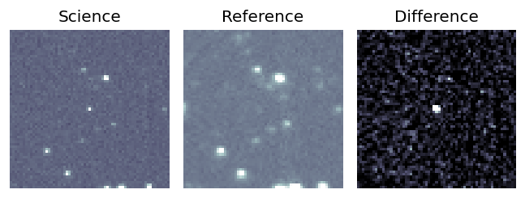
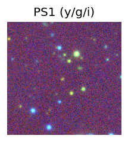

TESS: Sectors [ 14 26 40 53 54 74 80 81 119]
PS1: 1 source in 3 arcsec Closest: d = 1.41 arcsec photoz=0.55+/-0.07 peak abs mag = -23.07
LegacySurvey: 0 sources in 3 arcsec
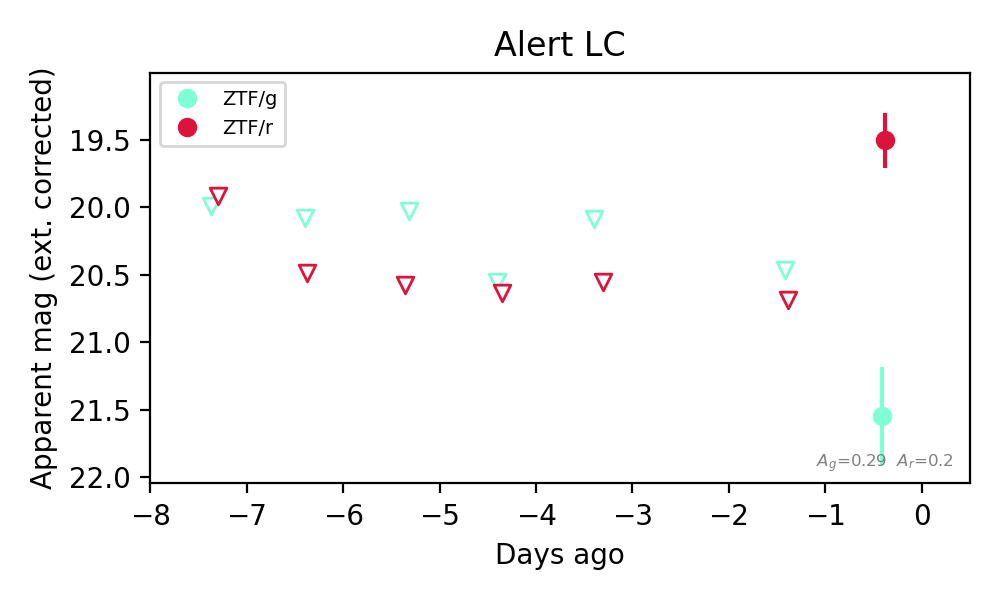
Extinction-corrected gr color:
From alerts: 2.04 +/- 0.42 mag
Consistent with synchrotron, g-r>0!
Rise Rate:
r: 1.17 mag/day
Fade Rate:
2. [ZTF] ZTF26abmwhml (Afterglow?) [Back to Top] [Share] [Trigger Swift] [Fritz Alert] [Fritz Source] [Lasair]RA, Dec: 287.07187, 74.85744 19h 8m17.25s, 74d51m26.79sGalactic (l, b): 106.22268, 25.02886 ext(g-r) = 0.101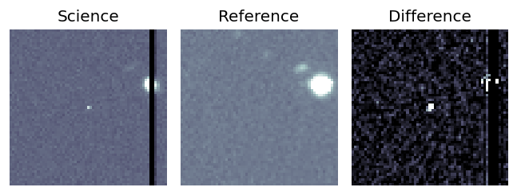
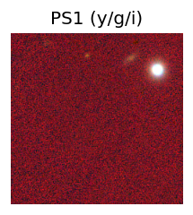
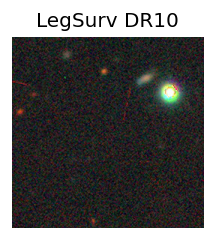
TESS: Sectors [ 14 15 16 17 18 19 20 21 22 23 24 25 26 41 47 48 49 50
51 52 53 54 55 56 57 58 59 60 73 74 75 76 77 78 79 80
81 82 83 84 85 86 118 119 120 121]
PS1: 0 sources in 3 arcsec
LegacySurvey: 0 sources in 3 arcsec
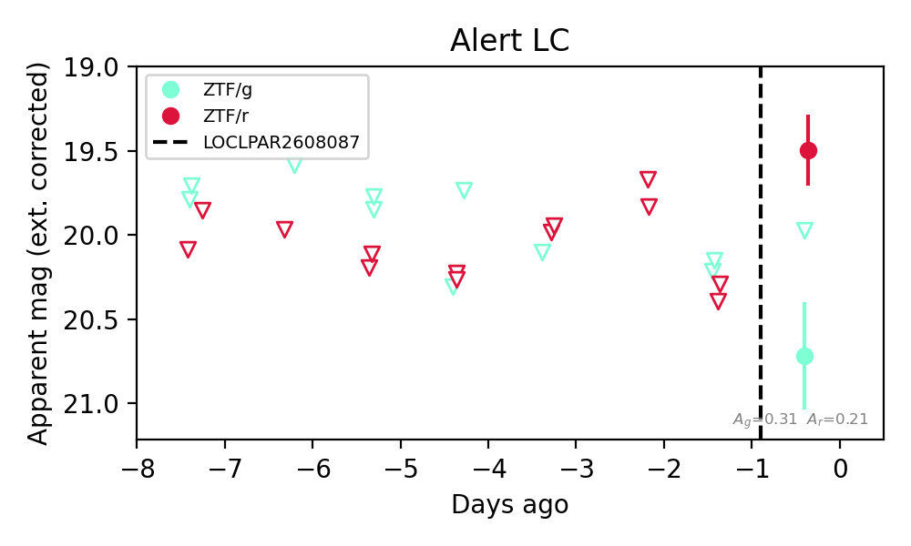
Extinction-corrected gr color:
From alerts: 1.22 +/- 0.38 mag
Consistent with synchrotron, g-r>0!
Rise Rate:
r: 0.87 mag/day
Fade Rate:
3. [ZTF] ZTF26abmwkiy (Afterglow?) [Back to Top] [Share] [Trigger Swift] [Fritz Alert] [Fritz Source] [Lasair]RA, Dec: 295.17348, 47.23549 19h40m41.63s, 47d14m7.78sGalactic (l, b): 80.25307, 11.88128 ext(g-r) = 0.12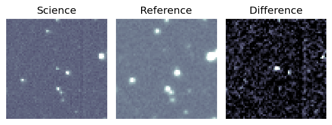
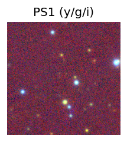

TESS: Sectors [ 14 15 40 41 54 55 74 75 81 82 119 120 121]
PS1: 1 source in 3 arcsec Closest: d = 5.67 arcsec photoz=1.15+/-0.77 peak abs mag = -24.77
LegacySurvey: 0 sources in 3 arcsec
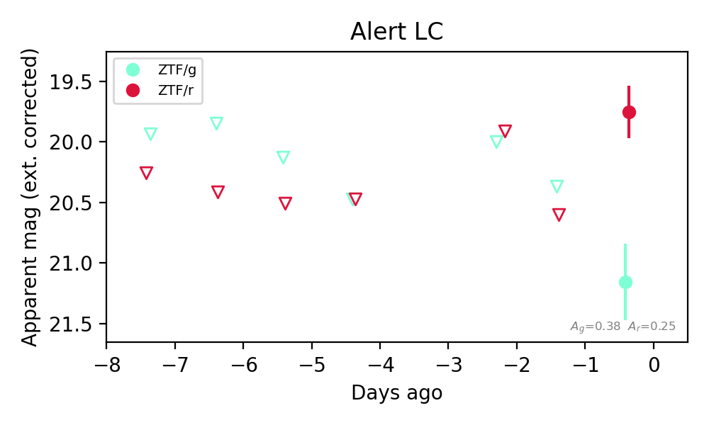
Extinction-corrected gr color:
From alerts: 1.4 +/- 0.38 mag
Consistent with synchrotron, g-r>0!
Rise Rate:
r: 0.83 mag/day
Fade Rate:
4. [ZTF] ZTF26abmwlhz (Afterglow?) [Back to Top] [Share] [Trigger Swift] [Fritz Alert] [Fritz Source] [Lasair]RA, Dec: 297.5645, 49.22312 19h50m15.48s, 49d13m23.24sGalactic (l, b): 82.80758, 11.40529 ext(g-r) = 0.187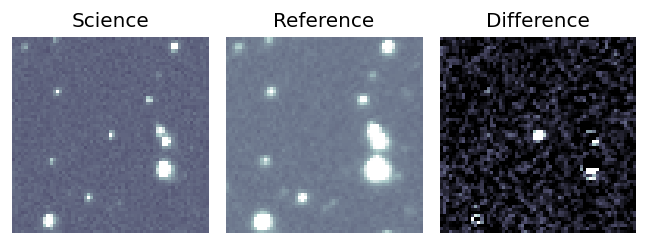
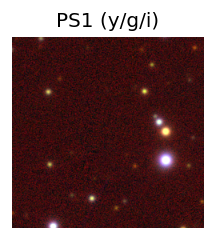

TESS: Sectors [ 14 15 41 54 55 56 74 75 76 81 82 83 119 120 121]
PS1: 0 sources in 3 arcsec
LegacySurvey: 0 sources in 3 arcsec
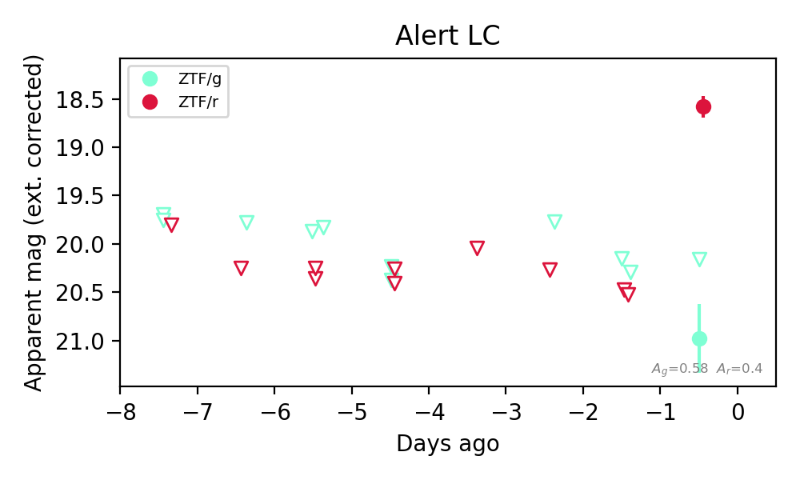
Extinction-corrected gr color:
From alerts: 2.4 +/- 0.38 mag
Consistent with synchrotron, g-r>0!
Rise Rate:
r: 1.99 mag/day
Fade Rate:
Section 2: Older Sources Observed Last Night (25)
0. [ZTF] ZTF26abljqps (Afterglow?) [Back to Top] [Share] [Trigger Swift] [Fritz Alert] [Fritz Source] [Lasair]RA, Dec: 282.6902, -10.97754 18h50m45.65s, -10d-58m-39.16sGalactic (l, b): 23.06228, -4.83285 ext(g-r) = 0.479


TESS: Sectors [80 92]
PS1: 1 source in 3 arcsec Closest: d = 1.12 arcsec photoz=0.83+/-0.09 peak abs mag = -26.90
LegacySurvey: 0 sources in 3 arcsec

Extinction-corrected gr color:
From alerts: -0.39 +/- 0.09 mag
Extinction-corrected gi color:
From alerts: -0.6 +/- 0.14 mag
Rise Rate:
g: 2.27 mag/day
r: 2.09 mag/day
i: 0.1 mag/day
Fade Rate:
g: 0.22 mag/day
i: 0.15 mag/day
1. [ZTF] ZTF26ablkwfo (Afterglow?) [Back to Top] [Share] [Trigger Swift] [Fritz Alert] [Fritz Source] [Lasair]RA, Dec: 269.78882, -8.71753 17h59m9.32s, -8d-43m-3.10sGalactic (l, b): 19.11374, 7.4602 ext(g-r) = 1.252


TESS: Sectors [ 80 118]
PS1: 1 source in 3 arcsec Closest: d = 2.44 arcsec photoz=0.92+/-0.08 peak abs mag = -27.90
LegacySurvey: 0 sources in 3 arcsec

Extinction-corrected gr color:
From alerts: -0.34 +/- 0.29 mag
Extinction-corrected gi color:
From alerts: -0.5 +/- 0.29 mag
Extinction-corrected ri color:
From alerts: -0.16 +/- 0.28 mag
Consistent with synchrotron, g-r>0!
Rise Rate:
g: 0.33 mag/day
r: 1.53 mag/day
i: 0.68 mag/day
Fade Rate:
g: 0.24 mag/day
r: 0.6 mag/day
i: 0.26 mag/day
2. [ZTF] ZTF26ablovsb (Afterglow?) [Back to Top] [Share] [Trigger Swift] [Fritz Alert] [Fritz Source] [Lasair]RA, Dec: 240.83736, 17.7233 16h 3m20.97s, 17d43m23.89sGalactic (l, b): 31.32711, 44.93528 ext(g-r) = 0.044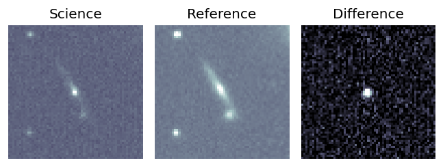
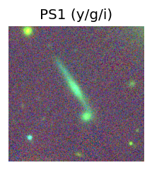
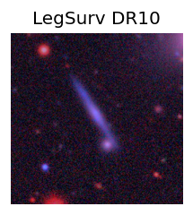
TESS: Sectors [ 24 25 51 78 117]
NED host (10 arcsec):Found WISEA J160321.00+174325.7 (G, 1.9″); NED spec-z: z=0.0300 [zflag SLS]; peak abs mag = -17.42
PS1: 0 sources in 3 arcsec
LegacySurvey: 1 sources in 3 arcsec Closest: d = 2.09 arcsec, 17.8 deg (east of north) photoz=0.02 (68% bounds 0.02, 0.03), type=SER peak abs mag (ext. corrected) = -16.89 (68% bounds -16.1, -17.61)
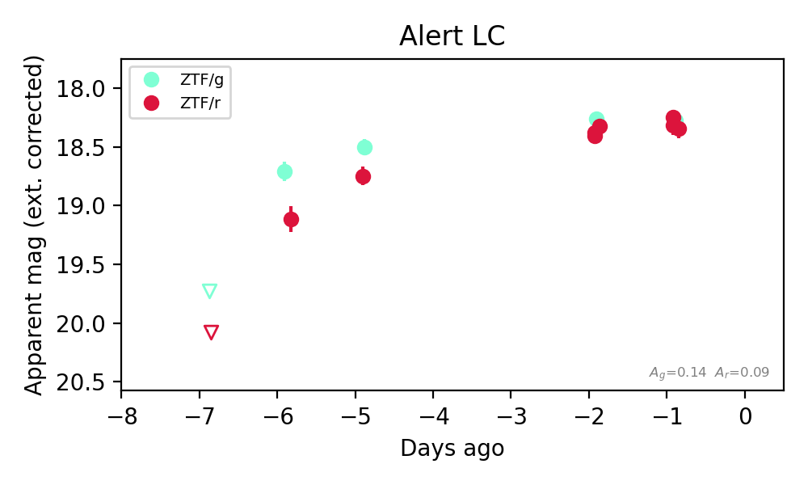
Extinction-corrected gr color:
From alerts: -0.02 +/- 0.08 mag
Consistent with synchrotron, g-r>0!
Rise Rate:
g: 1.06 mag/day
r: 0.14 mag/day
Fade Rate:
3. [ZTF] ZTF26ablvelv (Afterglow?) [Back to Top] [Share] [Trigger Swift] [Fritz Alert] [Fritz Source] [Lasair]RA, Dec: 218.87934, 15.98546 14h35m31.04s, 15d59m7.67sGalactic (l, b): 13.49405, 63.43523 ext(g-r) = 0.029


TESS: Sectors 50
NED host (10 arcsec):Found 2MASX J14353108+1559095 (G, 2.5″); NED spec-z: z=0.0529 [zflag SUN]; peak abs mag = -17.86
PS1: 0 sources in 3 arcsec
LegacySurvey: 1 sources in 3 arcsec Closest: d = 2.53 arcsec, 28.5 deg (east of north) photoz=0.07 (68% bounds 0.05, 0.09), type=SER peak abs mag (ext. corrected) = -18.5 (68% bounds -17.74, -18.95)

Extinction-corrected gr color:
From alerts: 0.22 +/- 0.21 mag
Consistent with synchrotron, g-r>0!
Rise Rate:
r: 1.11 mag/day
Fade Rate:
r: 0.2 mag/day
4. [ZTF] ZTF26abmabrc (FBOT?) [Back to Top] [Share] [Trigger Swift] [Fritz Alert] [Fritz Source] [Lasair]RA, Dec: 25.64318, -2.82362 1h42m34.36s, -2d-49m-25.04sGalactic (l, b): 151.83473, -62.78994 ext(g-r) = 0.024


TESS: Sectors [ 3 30 70 97 108]
PS1: 0 sources in 3 arcsec
LegacySurvey: 1 sources in 3 arcsec Closest: d = 0.28 arcsec, 163.5 deg (east of north) photoz=0.39 (68% bounds 0.15, 0.94), type=EXP peak abs mag (ext. corrected) = -23.56 (68% bounds -21.29, -25.89)

Extinction-corrected gr color:
From alerts: -0.32 +/- 0.11 mag
Extinction-corrected gi color:
From alerts: -0.6 +/- 0.21 mag
Extinction-corrected ri color:
From alerts: -0.42 +/- 0.2 mag
Rise Rate:
g: 0.24 mag/day
r: 0.16 mag/day
i: 0.1 mag/day
Fade Rate:
5. [ZTF] ZTF26abmiytv (FBOT?) [Back to Top] [Share] [Trigger Swift] [Fritz Alert] [Fritz Source] [Lasair]RA, Dec: 335.61247, -2.88677 22h22m26.99s, -2d-53m-12.37sGalactic (l, b): 60.65678, -46.93049 ext(g-r) = 0.071


TESS: Sectors [42 55 92]
SDSS (<15 kpc):Found SDSS phot-z: z=0.02; peak abs mag = -16.03
PS1: 0 sources in 3 arcsec
LegacySurvey: 1 sources in 3 arcsec Closest: d = 2.46 arcsec, 250.8 deg (east of north) photoz=0.17 (68% bounds 0.14, 0.22), type=SER peak abs mag (ext. corrected) = -20.63 (68% bounds -20.19, -21.22)

Extinction-corrected gr color:
From alerts: -0.12 +/- 0.19 mag
Extinction-corrected gi color:
From alerts: -0.46 +/- 0.22 mag
Extinction-corrected ri color:
From alerts: -0.35 +/- 0.2 mag
Consistent with synchrotron, g-r>0!
Rise Rate:
g: 0.36 mag/day
r: 0.32 mag/day
i: 0.26 mag/day
Fade Rate:
6. [ZTF] ZTF26abmlafy (Afterglow?FBOT?) [Back to Top] [Share] [Trigger Swift] [Fritz Alert] [Fritz Source] [Lasair]RA, Dec: 265.52485, 65.65545 17h42m5.97s, 65d39m19.61sGalactic (l, b): 95.39902, 31.6514 ext(g-r) = 0.054


TESS: Sectors [ 14 15 16 18 19 21 22 23 24 25 26 40 41 48 49 51 52 53
55 57 59 60 73 74 75 76 77 78 79 80 81 82 84 85 117 118
119 120 121]
SDSS (<15 kpc):Found SDSS phot-z: z=0.15; peak abs mag = -19.60
NED host (10 arcsec):Found DESI J265.5243+65.6573 (G, 6.7″); NED spec-z: z=1.1467 [zflag SLS]; peak abs mag = -24.74
DESI (10 arcsec):Found DESI spec-z: z=1.15; peak abs mag = -24.74
PS1: 0 sources in 3 arcsec
LegacySurvey: 1 sources in 3 arcsec Closest: d = 0.52 arcsec, 36.4 deg (east of north) photoz=0.11 (68% bounds 0.08, 0.14), type=EXP peak abs mag (ext. corrected) = -18.84 (68% bounds -17.96, -19.36)

Extinction-corrected gr color:
From alerts: -0.21 +/- 0.31 mag
Consistent with synchrotron, g-r>0!
Rise Rate:
g: 24.89 mag/day
r: 0.23 mag/day
Fade Rate:
7. [ZTF] ZTF26abljnpt (FBOT?) [Back to Top] [Share] [Trigger Swift] [Fritz Alert] [Fritz Source] [Lasair]RA, Dec: 239.28249, 28.69995 15h57m7.80s, 28d41m59.81sGalactic (l, b): 46.35755, 49.20904 ext(g-r) = 0.045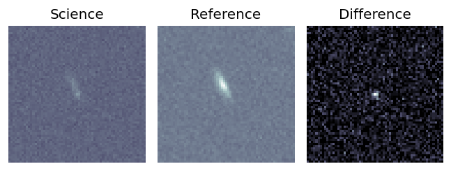
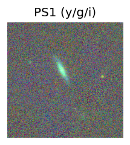
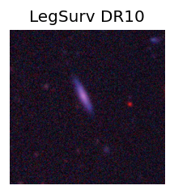
TESS: Sectors [ 24 51 117]
SDSS (<15 kpc):Found SDSS phot-z: z=0.11; peak abs mag = -19.66
PS1: 0 sources in 3 arcsec
LegacySurvey: 1 sources in 3 arcsec Closest: d = 1.03 arcsec, 268.3 deg (east of north) photoz=0.22 (68% bounds 0.14, 0.42), type=PSF peak abs mag (ext. corrected) = -21.28 (68% bounds -20.15, -22.89)
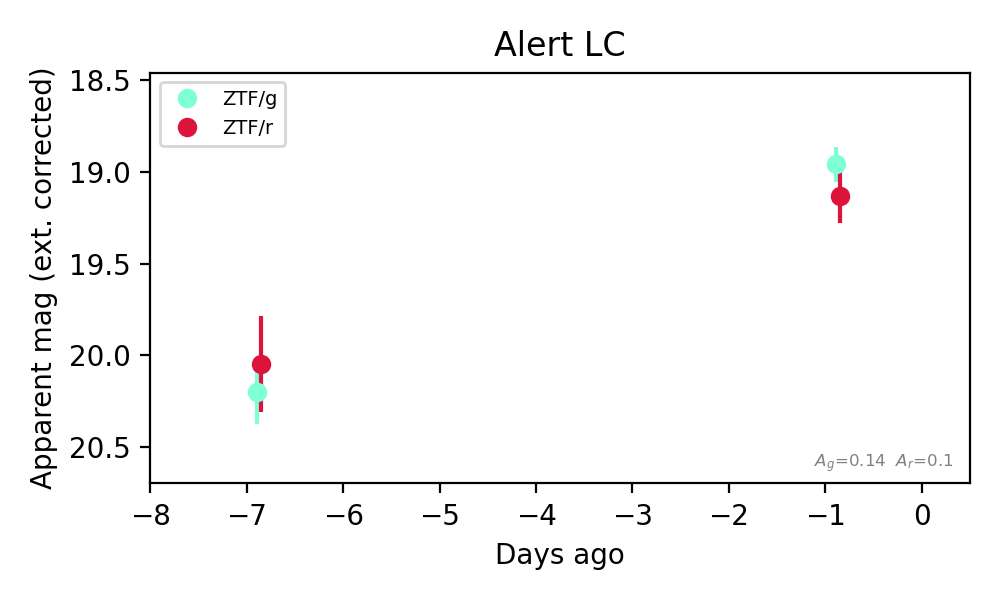
Extinction-corrected gr color:
From alerts: -0.17 +/- 0.18 mag
Consistent with synchrotron, g-r>0!
Rise Rate:
g: 0.21 mag/day
r: 0.15 mag/day
Fade Rate:
8. [ZTF] ZTF26abmkiau (FBOT?) [Back to Top] [Share] [Trigger Swift] [Fritz Alert] [Fritz Source] [Lasair]RA, Dec: 208.4206, 10.30585 13h53m40.94s, 10d18m21.07sGalactic (l, b): 346.96908, 67.68496 ext(g-r) = 0.034


TESS: Sectors [23 50]
SDSS (<15 kpc):Found SDSS phot-z: z=0.40; peak abs mag = -22.49
PS1: 0 sources in 3 arcsec
LegacySurvey: 1 sources in 3 arcsec Closest: d = 0.48 arcsec, 48.9 deg (east of north) photoz=0.52 (68% bounds 0.34, 0.72), type=REX peak abs mag (ext. corrected) = -23.17 (68% bounds -22.09, -24.02)

Extinction-corrected ri color:
From alerts: -0.04 +/- 0.26 mag
Consistent with synchrotron, g-r>0!
Rise Rate:
r: 0.25 mag/day
Fade Rate:
9. [ZTF] ZTF26abmktcy (FBOT?) [Back to Top] [Share] [Trigger Swift] [Fritz Alert] [Fritz Source] [Lasair]RA, Dec: 240.32627, 22.54312 16h 1m18.31s, 22d32m35.23sGalactic (l, b): 37.6778, 46.92755 ext(g-r) = 0.06


TESS: Sectors [ 24 25 51 78 117]
SDSS (<15 kpc):Found SDSS phot-z: z=0.20; peak abs mag = -20.92
PS1: 0 sources in 3 arcsec
LegacySurvey: 1 sources in 3 arcsec Closest: d = 3.10 arcsec, 79.2 deg (east of north) photoz=0.09 (68% bounds 0.06, 0.12), type=EXP peak abs mag (ext. corrected) = -19.11 (68% bounds -17.96, -19.77)

Extinction-corrected gr color:
From alerts: -0.04 +/- 0.14 mag
Consistent with synchrotron, g-r>0!
Rise Rate:
g: 0.33 mag/day
r: 0.28 mag/day
Fade Rate:
10. [ZTF] ZTF26abmlezv (FBOT?) [Back to Top] [Share] [Trigger Swift] [Fritz Alert] [Fritz Source] [Lasair]RA, Dec: 286.58218, 32.93214 19h 6m19.72s, 32d55m55.69sGalactic (l, b): 64.20454, 11.50151 ext(g-r) = 0.101


TESS: Sectors [ 14 40 41 53 54 74 80 81 119]
PS1: 1 source in 3 arcsec Closest: d = 0.84 arcsec photoz=0.30+/-0.06 peak abs mag = -21.47
LegacySurvey: 0 sources in 3 arcsec

Extinction-corrected gr color:
From alerts: -0.34 +/- 0.24 mag
Rise Rate:
g: 0.24 mag/day
r: 0.19 mag/day
Fade Rate:
11. [ZTF] ZTF26abmpvve (FBOT?) [Back to Top] [Share] [Trigger Swift] [Fritz Alert] [Fritz Source] [Lasair]RA, Dec: 311.54736, 21.56378 20h46m11.37s, 21d33m49.60sGalactic (l, b): 65.97411, -13.28148 ext(g-r) = 0.129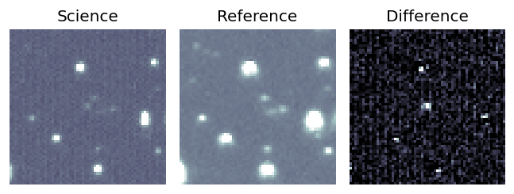
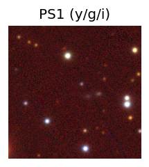

TESS: Sectors [ 14 15 41 55 82 120]
PS1: 1 source in 3 arcsec Closest: d = 4.42 arcsec photoz=0.13+/-0.08 peak abs mag = -19.57
LegacySurvey: 0 sources in 3 arcsec
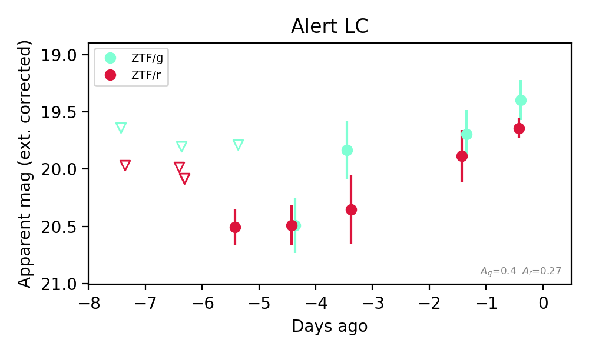
Extinction-corrected gr color:
From alerts: -0.25 +/- 0.2 mag
Rise Rate:
g: 0.23 mag/day
r: 0.19 mag/day
Fade Rate:
12. [ZTF] ZTF26abmutho (FBOT?) [Back to Top] [Share] [Trigger Swift] [Fritz Alert] [Fritz Source] [Lasair]RA, Dec: 243.0629, 7.0715 16h12m15.10s, 7d 4m17.39sGalactic (l, b): 19.64387, 38.42219 ext(g-r) = 0.065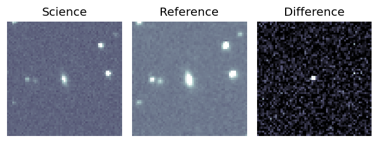
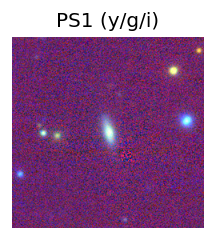
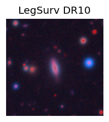
TESS: Sectors 117
NED host (10 arcsec):Found WISEA J161215.09+070416.7 (G, 0.6″); NED spec-z: z=0.1544 [zflag SLS]; peak abs mag = -20.36
PS1: 0 sources in 3 arcsec
LegacySurvey: 1 sources in 3 arcsec Closest: d = 0.66 arcsec, 203.9 deg (east of north) photoz=0.12 (68% bounds 0.1, 0.15), type=SER peak abs mag (ext. corrected) = -19.79 (68% bounds -19.41, -20.27)
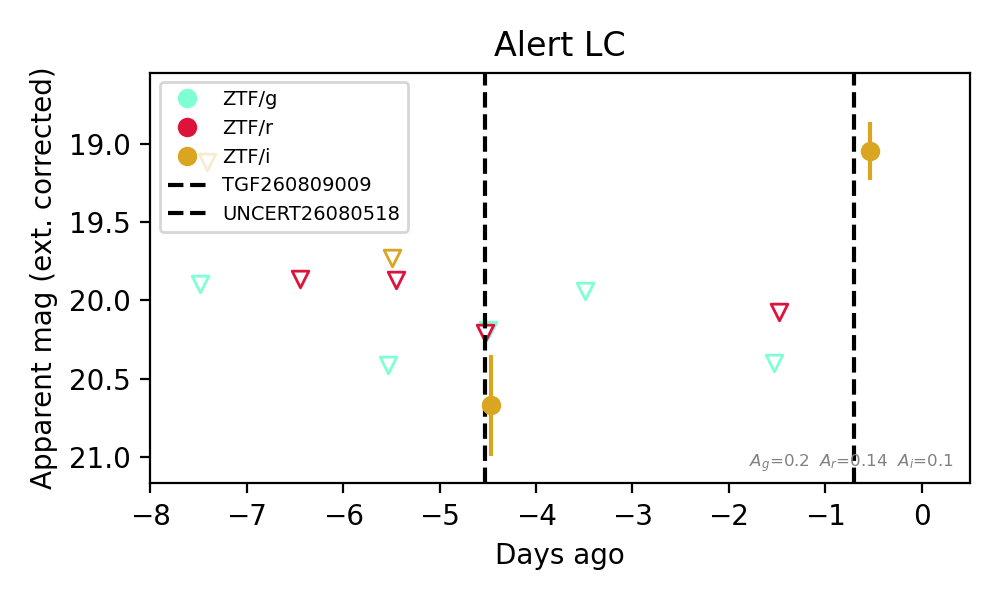
Extinction-corrected gi color:
From alerts: -0.48 +/- 99 mag
Extinction-corrected ri color:
From alerts: -0.46 +/- 99 mag
Rise Rate:
i: 0.41 mag/day
Fade Rate:
13. [ZTF] ZTF26abmuxof (FBOT?) [Back to Top] [Share] [Trigger Swift] [Fritz Alert] [Fritz Source] [Lasair]RA, Dec: 286.68829, -10.99542 19h 6m45.19s, -10d-59m-43.52sGalactic (l, b): 24.80545, -8.35515 ext(g-r) = 0.519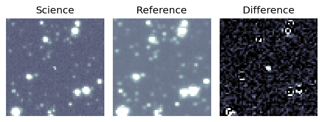
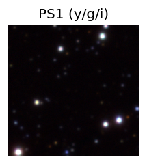

TESS: Sectors [80 92]
PS1: 1 source in 3 arcsec Closest: d = 1.02 arcsec photoz=0.07+/-0.11 peak abs mag = -20.05
LegacySurvey: 0 sources in 3 arcsec
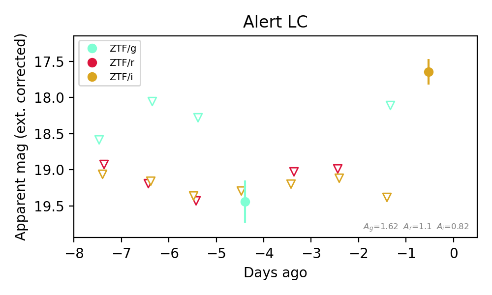
Extinction-corrected gi color:
From alerts: 0.15 +/- 99 mag
Rise Rate:
i: 1.96 mag/day
Fade Rate:
14. [ZTF] ZTF26abmuzjg (FBOT?) [Back to Top] [Share] [Trigger Swift] [Fritz Alert] [Fritz Source] [Lasair]RA, Dec: 282.52291, 12.49688 18h50m5.50s, 12d29m48.76sGalactic (l, b): 43.94292, 5.95647 ext(g-r) = 0.608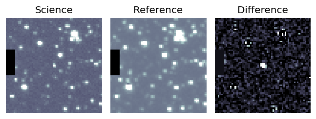
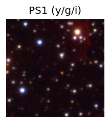

TESS: Sectors [54 80]
PS1: 1 source in 3 arcsec Closest: d = 1.62 arcsec photoz=0.61+/-0.81 peak abs mag = -25.62
LegacySurvey: 0 sources in 3 arcsec
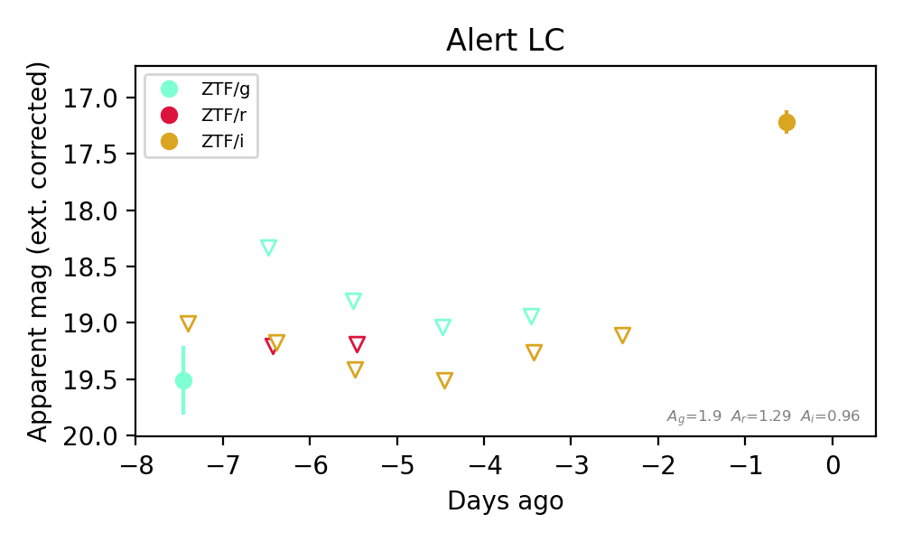
Extinction-corrected gi color:
From alerts: 0.5 +/- 99 mag
Rise Rate:
i: 1.0 mag/day
Fade Rate:
15. [ZTF] ZTF26abmvdez (FBOT?) [Back to Top] [Share] [Trigger Swift] [Fritz Alert] [Fritz Source] [Lasair]RA, Dec: 232.26933, 53.79358 15h29m4.64s, 53d47m36.90sGalactic (l, b): 86.60543, 50.72431 ext(g-r) = 0.016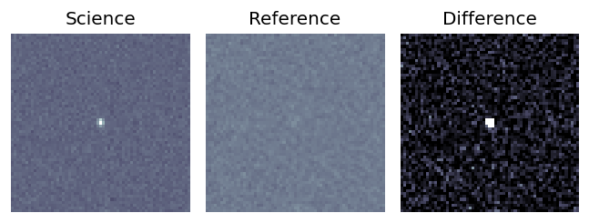
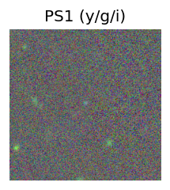
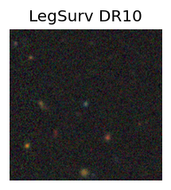
TESS: Sectors [16 22 23 24 49 50 51 76 77 78]
PS1: 0 sources in 3 arcsec
LegacySurvey: 1 sources in 3 arcsec Closest: d = 0.23 arcsec, 11.4 deg (east of north) photoz=0.34 (68% bounds 0.19, 0.48), type=DEV peak abs mag (ext. corrected) = -22.48 (68% bounds -21.03, -23.41)
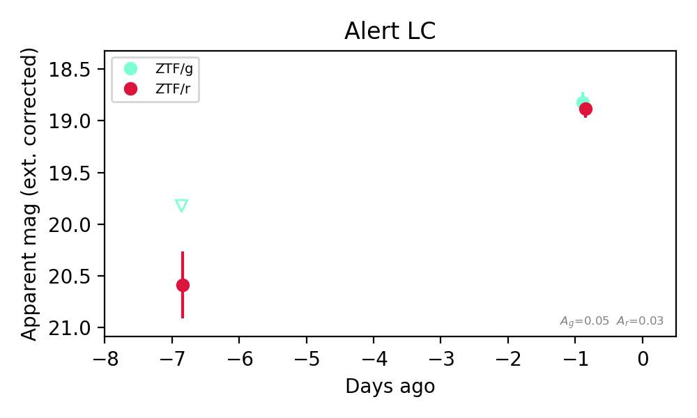
Extinction-corrected gr color:
From alerts: -0.06 +/- 0.14 mag
Consistent with synchrotron, g-r>0!
Rise Rate:
g: 0.17 mag/day
r: 0.28 mag/day
Fade Rate:
16. [ZTF] ZTF26abmvfvm (FBOT?) [Back to Top] [Share] [Trigger Swift] [Fritz Alert] [Fritz Source] [Lasair]RA, Dec: 232.56927, 37.56505 15h30m16.62s, 37d33m54.19sGalactic (l, b): 60.51264, 55.15483 ext(g-r) = 0.02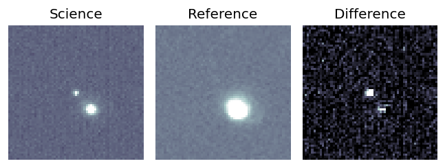
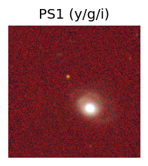
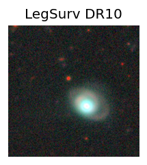
TESS: Sectors [24 50 51 77 78]
PS1: 0 sources in 3 arcsec
LegacySurvey: 1 sources in 3 arcsec Closest: d = 7.07 arcsec, 23.1 deg (east of north) photoz=0.11 (68% bounds 0.05, 0.79), type=PSF peak abs mag (ext. corrected) = -20.1 (68% bounds -18.24, -25.03)
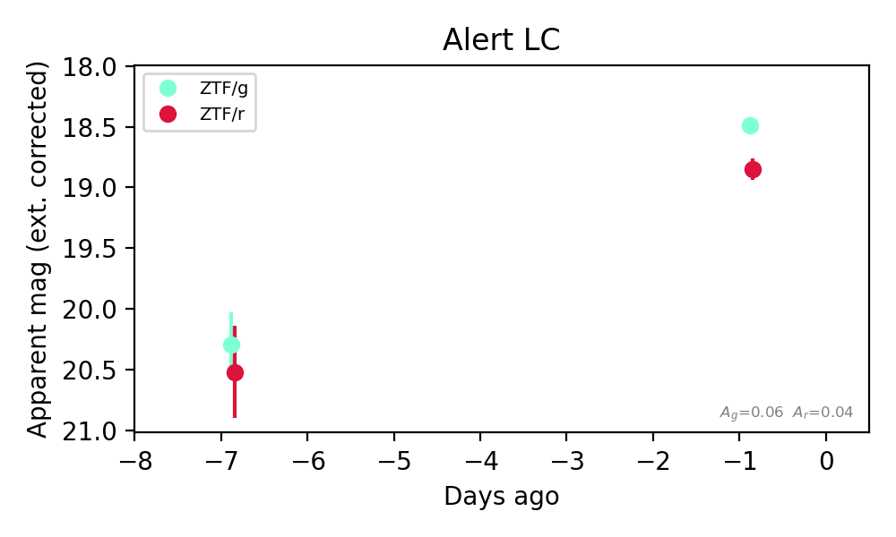
Extinction-corrected gr color:
From alerts: -0.36 +/- 0.11 mag
Rise Rate:
g: 0.3 mag/day
r: 0.28 mag/day
Fade Rate:
17. [ZTF] ZTF26abmvkvy (Afterglow?) [Back to Top] [Share] [Trigger Swift] [Fritz Alert] [Fritz Source] [Lasair]RA, Dec: 289.21792, -17.27066 19h16m52.30s, -17d-16m-14.37sGalactic (l, b): 20.10976, -13.26738 WARNING: 4.95 deg from ecliptic plane ext(g-r) = 0.124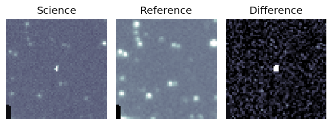
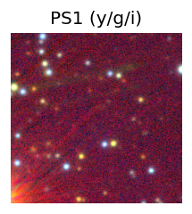
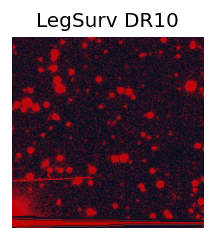
TESS: Sectors [ 92 116]
PS1: 0 sources in 3 arcsec
LegacySurvey: 0 sources in 3 arcsec
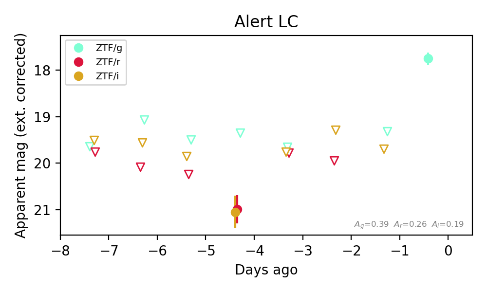
Extinction-corrected gr color:
From alerts: -1.65 +/- 99 mag
Extinction-corrected gi color:
From alerts: -1.71 +/- 99 mag
Extinction-corrected ri color:
From alerts: -0.06 +/- 0.46 mag
Consistent with synchrotron, g-r>0!
Rise Rate:
g: 1.86 mag/day
Fade Rate:
18. [ZTF] ZTF26abmwbfz (Afterglow?FBOT?) [Back to Top] [Share] [Trigger Swift] [Fritz Alert] [Fritz Source] [Lasair]RA, Dec: 279.19109, 39.05438 18h36m45.86s, 39d 3m15.78sGalactic (l, b): 67.70595, 19.36076 ext(g-r) = 0.059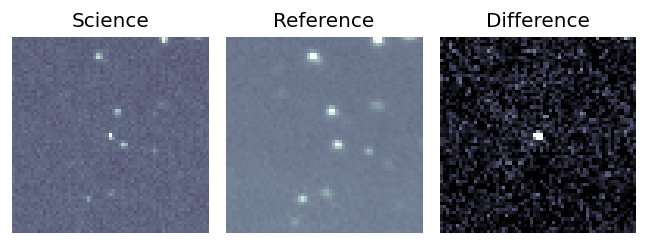
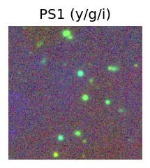
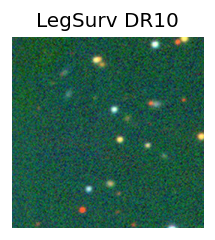
TESS: Sectors [ 14 26 40 53 54 74 80 81 118 119]
PS1: 0 sources in 3 arcsec
LegacySurvey: 1 sources in 3 arcsec Closest: d = 5.11 arcsec, 238.0 deg (east of north) photoz=0.12 (68% bounds 0.03, 0.2), type=PSF peak abs mag (ext. corrected) = -19.58 (68% bounds -16.59, -20.76)
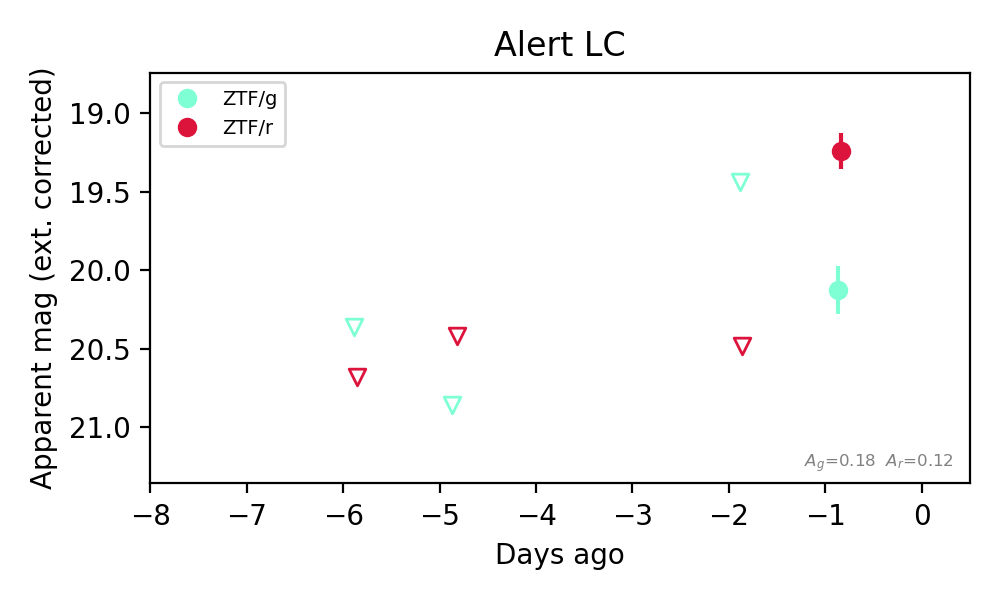
Extinction-corrected gr color:
From alerts: 0.88 +/- 0.19 mag
Consistent with synchrotron, g-r>0!
Rise Rate:
g: 0.18 mag/day
r: 1.21 mag/day
Fade Rate:
19. [ZTF] ZTF26abmwdkn (Afterglow?) [Back to Top] [Share] [Trigger Swift] [Fritz Alert] [Fritz Source] [Lasair]RA, Dec: 295.44127, 3.04788 19h41m45.91s, 3d 2m52.38sGalactic (l, b): 41.48098, -9.75001 ext(g-r) = 0.422
TESS: Sectors [54 81]
PS1: 1 source in 3 arcsec Closest: d = 3.77 arcsec photoz=0.86+/-0.06 peak abs mag = -25.16
LegacySurvey: 0 sources in 3 arcsec
Extinction-corrected gr color:
From alerts: 0.64 +/- 99 mag
Extinction-corrected ri color:
From alerts: -0.71 +/- 99 mag
Rise Rate:
r: 1.27 mag/day
Fade Rate:
r: 0.34 mag/day
20. [ZTF] ZTF26abmwkis (FBOT?) [Back to Top] [Share] [Trigger Swift] [Fritz Alert] [Fritz Source] [Lasair]RA, Dec: 294.10635, 47.31102 19h36m25.52s, 47d18m39.65sGalactic (l, b): 79.98626, 12.56094 ext(g-r) = 0.162
TESS: Sectors [ 14 15 40 41 54 55 74 75 119 120 121]
PS1: 1 source in 3 arcsec Closest: d = 7.76 arcsec photoz=2.62+/-8.26 peak abs mag = -27.84
LegacySurvey: 0 sources in 3 arcsec
Extinction-corrected gr color:
From alerts: 0.99 +/- 99 mag
Rise Rate:
r: 1.59 mag/day
Fade Rate:
21. [ZTF] ZTF26abmygey (FBOT?) [Back to Top] [Share] [Trigger Swift] [Fritz Alert] [Fritz Source] [Lasair]RA, Dec: 303.69247, 13.07087 20h14m46.19s, 13d 4m15.14sGalactic (l, b): 54.46595, -11.84096 ext(g-r) = 0.186
TESS: Sectors [54 81]
PS1: 1 source in 3 arcsec Closest: d = 1.61 arcsec photoz=0.33+/-0.43 peak abs mag = -21.66
LegacySurvey: 0 sources in 3 arcsec
Extinction-corrected gr color:
From alerts: -0.53 +/- 0.31 mag
Rise Rate:
g: 0.17 mag/day
r: 0.35 mag/day
Fade Rate:
22. [ZTF] ZTF26abmyros (FBOT?) [Back to Top] [Share] [Trigger Swift] [Fritz Alert] [Fritz Source] [Lasair]RA, Dec: 326.36202, 50.96451 21h45m26.89s, 50d57m52.22sGalactic (l, b): 95.73489, -1.8145 ext(g-r) = 1.729
TESS: Sectors [ 16 56 57 76 77 83 84 121]
PS1: 1 source in 3 arcsec Closest: d = 3.02 arcsec photoz=0.03+/-0.45 peak abs mag = -21.53
LegacySurvey: 0 sources in 3 arcsec
Extinction-corrected gr color:
From alerts: -0.6 +/- 99 mag
Rise Rate:
g: 2.65 mag/day
Fade Rate:
23. [ZTF] ZTF26abmztvt (Afterglow?) [Back to Top] [Share] [Trigger Swift] [Fritz Alert] [Fritz Source] [Lasair]RA, Dec: 326.4979, -7.51141 21h45m59.50s, -7d-30m-41.08sGalactic (l, b): 48.18351, -41.95315 ext(g-r) = 0.041
TESS: Sectors [ 92 116]
SDSS (<15 kpc):Found SDSS phot-z: z=0.37; peak abs mag = -23.01
PS1: 0 sources in 3 arcsec
LegacySurvey: 1 sources in 3 arcsec Closest: d = 3.04 arcsec, 343.4 deg (east of north) photoz=1.0 (68% bounds 0.76, 1.27), type=REX peak abs mag (ext. corrected) = -25.63 (68% bounds -24.92, -26.27)
Extinction-corrected gi color:
From alerts: 0.99 +/- 99 mag
Extinction-corrected ri color:
From alerts: 0.98 +/- 99 mag
Rise Rate:
i: 48.63 mag/day
Fade Rate:
i: 1.23 mag/day
24. [ZTF] ZTF26abnaeuy (Afterglow?) [Back to Top] [Share] [Trigger Swift] [Fritz Alert] [Fritz Source] [Lasair]RA, Dec: 347.96516, -4.13907 23h11m51.64s, -4d-8m-20.64sGalactic (l, b): 72.61059, -56.94021 WARNING: 0.95 deg from ecliptic plane ext(g-r) = 0.051
TESS: Sectors [42 70 92]
SDSS (<15 kpc):Found SDSS phot-z: z=0.49; peak abs mag = -24.05
PS1: 0 sources in 3 arcsec
LegacySurvey: 1 sources in 3 arcsec Closest: d = 4.41 arcsec, 306.9 deg (east of north) photoz=0.9 (68% bounds 0.4, 1.66), type=REX peak abs mag (ext. corrected) = -25.66 (68% bounds -23.56, -27.3)
Extinction-corrected gr color:
From alerts: 1.44 +/- 99 mag
Extinction-corrected gi color:
From alerts: 1.81 +/- 99 mag
Extinction-corrected ri color:
From alerts: 1.92 +/- 99 mag
Rise Rate:
r: 1.68 mag/day
i: 0.48 mag/day
Fade Rate:
r: 0.74 mag/day
i: 0.6 mag/day